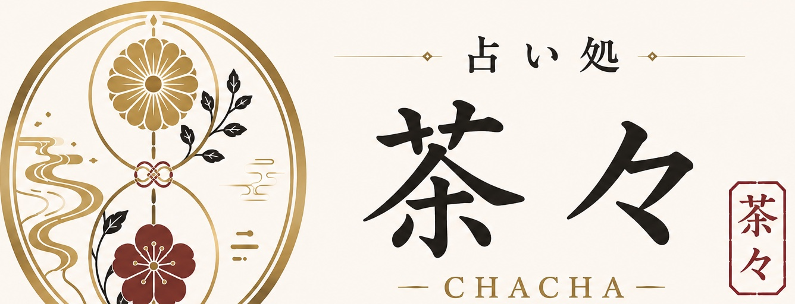
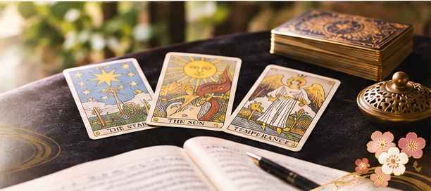

命解術
基本鑑定
ひとつのお悩みを、
丁寧に整理したい方へ
今の状況や課題、これからの方向性を読み解きます。
- 使用カード
- タロット5枚
- 鑑定後のご相談
- なし
通常価格9,980円
初回限定価格6,980円

命解術／数秘×タロット

無料鑑定の、その先へ。
数秘術とタロットを掛け合わせた「命解術」で、
今の状況や心の奥にある想いを丁寧に読み解き、
これからの選択を考えるための
鑑定書をお届けします。
無料鑑定で見えてきたことの、その先へ。
茶々の本鑑定では、今のお悩みをさらに丁寧に紐解いていきます。
数秘術 × タロット
生まれ持った性質や傾向、人生のテーマを読み解きます。
今の状況や、これからの可能性・選択肢を視ていきます。
この二つを掛け合わせ、
あなたの状況に合わせた
「今とこれから」を読み解く、
占い処 茶々の鑑定法です。
大アルカナ3枚を使用し、
事前に確認した3つの鑑定軸に沿って、
今の状況やこれからの方向性を
丁寧に読み解きます。
大アルカナと小アルカナを含む
78枚のタロットを使用し、
コースに応じた枚数とスプレッドで、
ご相談の背景や関係性、今後の展開、
具体的な向き合い方などを
さらに詳しく読み解きます。
ご相談の内容や知りたい深さに合わせて、3つのコースからお選びいただけます。
命解術
ひとつのお悩みを、
丁寧に整理したい方へ
今の状況や課題、これからの方向性を読み解きます。
通常価格9,980円
初回限定価格6,980円
おすすめ
命解術
ひとつのお悩みを、
さらに深く理解したい方へ
背景や関係性、今後の展開、具体的な向き合い方まで掘り下げます。
通常価格15,980円
初回限定価格9,980円
命解術
複数の要素が絡むお悩みを、
多角的に整理したい方へ
状況の全体像や、それぞれの要素のつながりを総合的に読み解きます。
通常価格32,800円
初回限定価格19,800円
はじめまして。茶々です。
誰にも話せず、ひとりで抱えてきたお気持ちもあると思います。うちが大切にしているのは、カードの意味をただお伝えするだけやなく、その方が歩んできた道や、今のお気持ちを丁寧に受け止めること。
数秘術とタロットを掛け合わせながら、お悩みの背景や、これから考えられる道を一緒に紐解いていきます。
未来を決めつけるのではなく、ご自身の気持ちを大切にしながら、次の一歩を考えられるように。そんな思いで、一つひとつのご相談に向き合っています。
このページのボタンから
STORESの商品ページへ。
必要事項とご相談内容を
ご入力ください。
いただいた内容をもとに、
命解術で鑑定します。
文章の鑑定書を
お送りします。